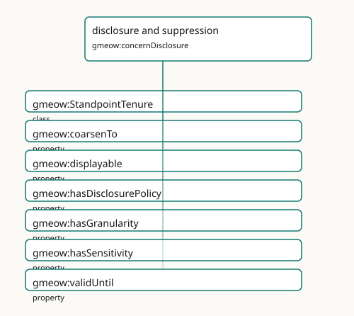

disclosure and suppression
Projection-time withholding, coarsening, sensitivity, and display control.

Participating Slices
- kernel - GMEOW Core Module
- names - GMEOW Names Module
- standpoint - GMEOW
StandpointModule - temporal - GMEOW Temporal — intervals, instants, temporal frames, time-scoped relations
Terms
| Term | Category | Definition |
|---|---|---|
gmeow:StandpointTenure |
class | The reified, time-scoped fact that a standpoint held a particular position over an interval — recognition granted in 2008 and withdrawn in 2030 is an opened-then-closed tenure, nev |
gmeow:coarsenTo |
property | Disclosure control: marks a value/relator so that at projection time it is generalized to no finer than the named gmeow:GranularityLevel — a coarser ancestor is emitted instead of |
gmeow:displayable |
property | Whether a name or identity facet may be shown in interfaces and reports. The ONLY display control in the model — across naming (gmeow:Appellation) and identity (gmeow:IdentityFacet |
gmeow:hasDisclosurePolicy |
property | Relates a value, entity, or claim to its disclosure policy — the explicit what facet of disclosure control. Domain-free (universal, like hasGranularity and hasSensitivity). NOT f |
gmeow:hasGranularity |
property | Relates a value, place, period, coordinate or measurement to its own resolution level — the explicit 'no silent precision' facet, queryable independently of any disclosure control. |
gmeow:hasSensitivity |
property | Relates a value, entity, or claim to its privacy-sensitivity level — the explicit facet that drives disclosure-control decisions (coarsenTo / displayable) at projection time under |
gmeow:validUntil |
property | The instant until which the annotated statement is asserted to hold. |